Beispiel 1: Ein einfaches LED-Streifen (3 Meter mit 30 LEDs/Meter)
Aufgabe: Man möchte ein einfaches LED-Streifen mit 3 Meter Länge und 30 LEDs/Meter realisieren. Das Netzteil soll in der Nähe vom LED-Streifen im Abstand von ca. 50 cm platziert werden. Es soll die volle Helligkeit des Streifens ausgenutzt werden. Man entscheidet sich aus Kostengründen für ein einfaches WS2812B 5V Typ LED-Streifen.

Lösung: Bei 3 Meter Länger und 30 LEDs/m müssen gesamt also 90 LEDs angesteuert werden. Man gibt die Daten in den Rechner ein und erhält das Ergebnis:
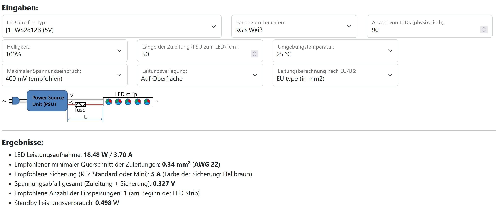
Der LED Stromverbrauch beträgt maximal 3,70 A. Zusätzlich werden typisch ca. 0,5 A für den WLED Controller notwendig sein. Damit muss das Netzteil mindestens 4,2 A liefern können. Angenommen, man verwendet 10 A (50 Watt) Netzteil, welches man für mögliche spätere Erweiterungen mit Vorhalt angeschafft hat. In diesem Fall ist unbedingt eine Sicherung zu verwenden. Die durch den Rechner vorgeschlagene Sicherung hat 5 A Nominalwert. Der Leitungsquerschnitt muss dabei mindestens 0,34 mm2 betragen. Der Rechner sagt ferner, dass eine Strom-Einspeisestelle am Beginn des LED-Strips ausreichend ist.
Die Sicherung kann in einem separaten Sicherungshalter integriert werden:

Oder wenn z.B. ein Controller mit Sicherungsmöglichkeit verwendet werden soll (wie z.B. ein ABC! WLED Controller Board V31), kann die Sicherung direkt im Controller verwendet werden.

Als Ergänzung wird gezeigt, was sich ändert, wenn der Abstand zwischen dem Netzteil und dem LED-Streifen auf 1,50 m vergrößert wird. In Ergebnissen ändert sich nur der empfohlene Kabelquerschnitt von 0,34 mm2 auf 1 mm2. Diese Änderung ist notwendig, um den Spannungsabfall über die Zuleitung gering zu halten:
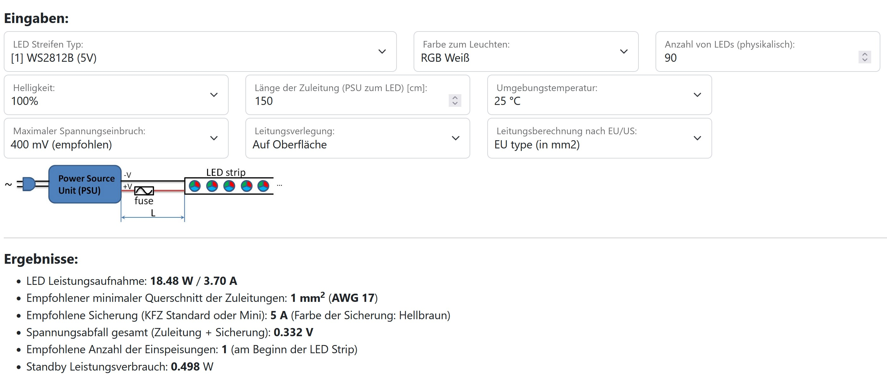
Lösung: Bei 3 Meter Länger und 30 LEDs/m müssen gesamt also 90 LEDs angesteuert werden. Man gibt die Daten in den Rechner ein und erhält das Ergebnis:
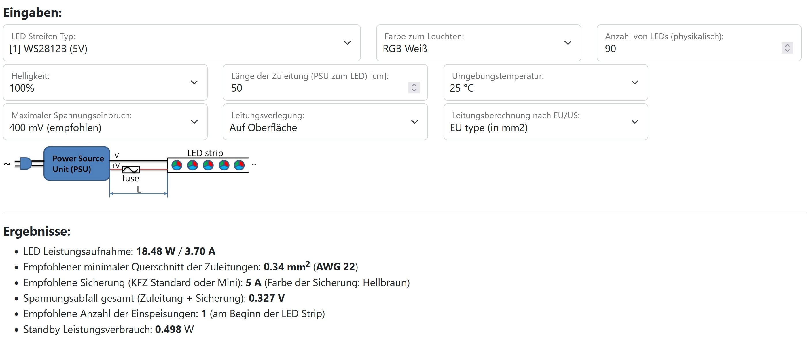
Der LED Stromverbrauch beträgt maximal 3,70 A. Zusätzlich werden typisch ca. 0,5 A für den WLED Controller notwendig sein. Damit muss das Netzteil mindestens 4,2 A liefern können. Angenommen, man verwendet 10 A (50 Watt) Netzteil, welches man für mögliche spätere Erweiterungen mit Vorhalt angeschafft hat. In diesem Fall ist unbedingt eine Sicherung zu verwenden. Die durch den Rechner vorgeschlagene Sicherung hat 5 A Nominalwert. Der Leitungsquerschnitt muss dabei mindestens 0,34 mm2 betragen. Der Rechner sagt ferner, dass eine Strom-Einspeisestelle am Beginn des LED-Strips ausreichend ist.
Die Sicherung kann in einem separaten Sicherungshalter integriert werden:
Oder wenn z.B. ein Controller mit Sicherungsmöglichkeit verwendet werden soll (wie z.B. ein ABC! WLED Controller Board V31), kann die Sicherung direkt im Controller verwendet werden.
Als Ergänzung wird gezeigt, was sich ändert, wenn der Abstand zwischen dem Netzteil und dem LED-Streifen auf 1,50 m vergrößert wird. In Ergebnissen ändert sich nur der empfohlene Kabelquerschnitt von 0,34 mm2 auf 1 mm2. Diese Änderung ist notwendig, um den Spannungsabfall über die Zuleitung gering zu halten:
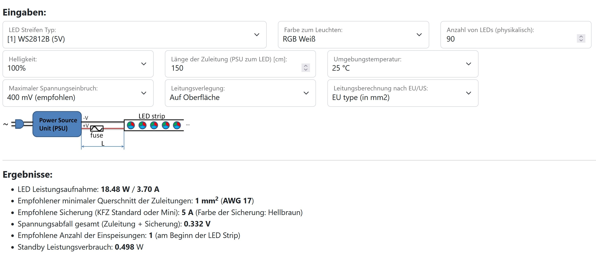
Beispiel 2: Ein 75 Zoll TV soll Ambilight bekommen. Gesamt 152 LEDs vom Typ SK6812RGBNW
Aufgabe: Man möchte sein 75 Zoll TV mit Ambilight ausstatten (für Details sieh z.B. Hyperion Projekt). Die LEDs möchte man dabei mit WLED steuern. Für eine bessere Farbwiedergabe wählt man als LED Typ SK6812NW. Man entscheidet für sich wie viele andere auch, dass 30 LEDs/Meter ausreichend sind. Das Netzteil und den WLED-Controller möchte man unter (oder hinter) dem Fernseher platzieren (ca. 50 cm Abstand zu LEDs).

Lösung: Ein 75 Zoll TV hat die Seitenlängen ca. 167cm x 94cm. Mit 30 LEDs/Meter kann man also auf eine lange Seite 49 LEDs und auf eine kurze Seite 27 LEDs platzieren. Insgesamt sind es 49*2+27*2 = 152 LEDs. Man gibt die Daten in den Rechner ein, vergisst dabei nicht „RGB Weiß + Weiß“ zu wählen und erhält das Ergebnis:
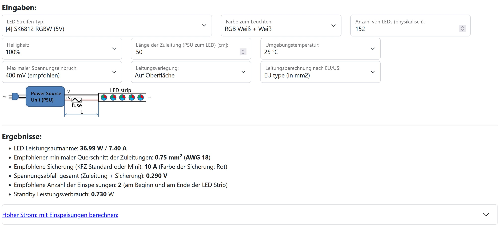
Dabei fällt auf, dass der Rechner 2 Einspeisungen empfiehlt, um die volle Helligkeit bei „RGB Weiß+Weiß“ zu ermöglichen: am Anfang und am Ende des Streifens. Die Ergebnisse bzgl. empfohlener Leitungsquerschnitt und Absicherung können also nur für den Abschnitt zwischen dem Netzteil und der Stromverteilung angewendet werden. Um die Auslegung nach der Stromverteilung zu machen, klicken wir weiter auf „Hoher Strom: mit Einspeisungen berechnen:“. Hier geben wir an, dass ab der Stromverteilung bis zum LED Streifen am Anfang und am Ende nur ein kurzes Stückchen von 20 cm ist:

Jede Stromeinspeisung kann also mit 0,34 mm2 realisiert werden und muss mit 5 A Sicherung abgesichert werden. Das Ergebnis ist auf dem Bild dargestellt:

Die Sicherungen können im Kabel integriert werden oder man verwendet ein spezielles Sicherungsboard wie z.B. dieses.
Lösung: Ein 75 Zoll TV hat die Seitenlängen ca. 167cm x 94cm. Mit 30 LEDs/Meter kann man also auf eine lange Seite 49 LEDs und auf eine kurze Seite 27 LEDs platzieren. Insgesamt sind es 49*2+27*2 = 152 LEDs. Man gibt die Daten in den Rechner ein, vergisst dabei nicht „RGB Weiß + Weiß“ zu wählen und erhält das Ergebnis:
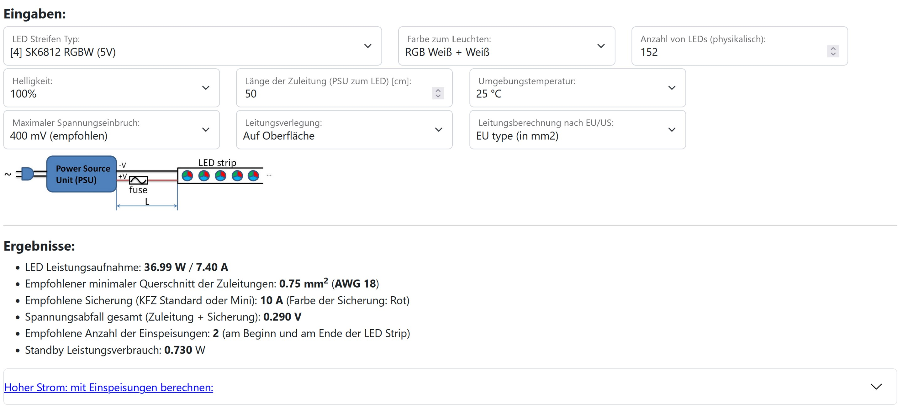
Dabei fällt auf, dass der Rechner 2 Einspeisungen empfiehlt, um die volle Helligkeit bei „RGB Weiß+Weiß“ zu ermöglichen: am Anfang und am Ende des Streifens. Die Ergebnisse bzgl. empfohlener Leitungsquerschnitt und Absicherung können also nur für den Abschnitt zwischen dem Netzteil und der Stromverteilung angewendet werden. Um die Auslegung nach der Stromverteilung zu machen, klicken wir weiter auf „Hoher Strom: mit Einspeisungen berechnen:“. Hier geben wir an, dass ab der Stromverteilung bis zum LED Streifen am Anfang und am Ende nur ein kurzes Stückchen von 20 cm ist:
Jede Stromeinspeisung kann also mit 0,34 mm2 realisiert werden und muss mit 5 A Sicherung abgesichert werden. Das Ergebnis ist auf dem Bild dargestellt:
Die Sicherungen können im Kabel integriert werden oder man verwendet ein spezielles Sicherungsboard wie z.B. dieses.
Beispiel 3: 18 Meter WS28xx RGB FCOB LED Streifen 24 V (720 LEDs/m), mehrere Netzteile
Aufgabe: In einem Zimmer soll unter der Decke RGB FCOB-LED Streifen als ambiente Beleuchtung eingesetzt werden. Die Zimmergröße beträgt 5m x 4m. Es soll ein WS28xx FCOB-LED mit 720 LEDs/m eingesetzt werden. Netzteil muss im Zimmer unten, also im Abstand von ca. 2 m zum LED Streifen platziert werden.

Lösung: Es müssen gesamt (5+4)*2 = 18 Meter LED Streifen verlegt werden. Bei RGB FCOB Streifen bei der Angabe 720 LEDs/m wird gemeint, dass pro Meter 240 LEDs jeder Farbe (R,G,B) vorhanden sind. Daher zählen wir das wie bei LED Strips mit einzelnen LEDs, dass es 240 LEDs pro Meter sind. Bei 18 Meter ergeben sich 18*240 = 4320 "RGB" LEDs. Wir geben die Daten in den Rechner ein. Bei 24 V darf der Spannungsabfall höher sein, wir wählen 700 mV:
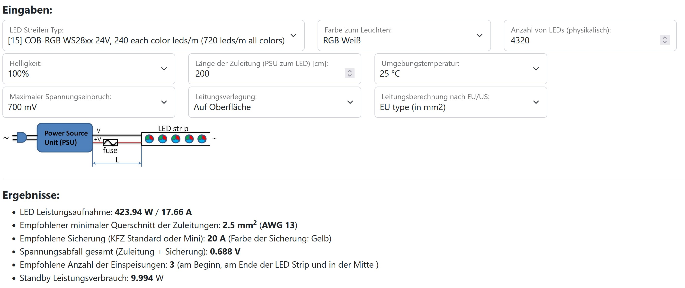
Das Ergebnis zeigt, dass man gesamt knapp 18 A braucht und man 3 Stromeinspeisungen realisieren muss: am Anfang, am Ende und in der Mitte. In der Mitte bedeutet in diesem Fall in der gegenüber liegender Ecke des Raums. Würde man das ganze mit einem Netzteil realisieren wollen, würde die Länge der Stromleitungen vom Netzteil zu jeweiliger Einspeisestelle betragen: 2m, 11m, 2m. Wir berechnen damit die Stromeinspeisungen:
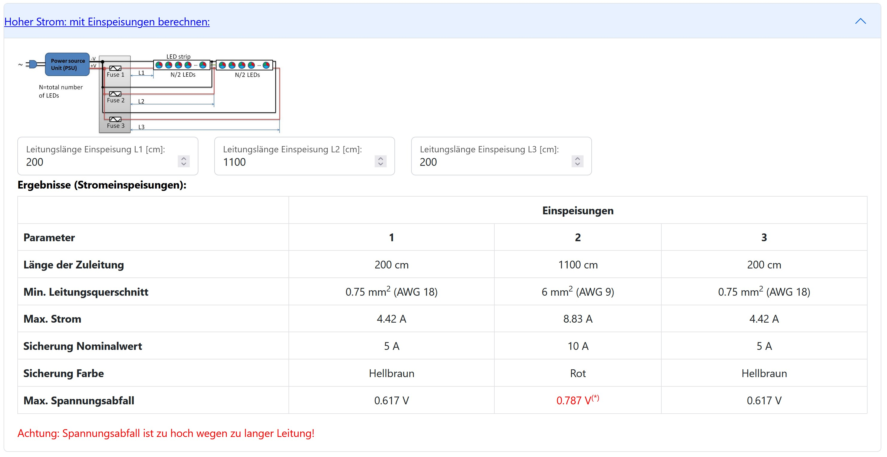
Dabei fällt auf, dass für die Mitteleinspeisung ein sehr dickes Kabel gebraucht wird, um den Spannungsabfall klein zu halten und man trotzdem 700mV überschreitet. Wir entscheiden deswegen in der Gegenüberliegender Ecker des Raumes ein weiteres Netzteil zu platzieren. Somit versorgt jedes Netzteil nur die jeweilige Hälfte des LED Streifens, dabei jeweils 4,5 Meter davon in jede Richtung:

Somit versorgt jedes Netzteil 9 Meter LED Streifen, also pro Netzteil müssen in dem Rechner 2160 LEDs eingegeben werden:
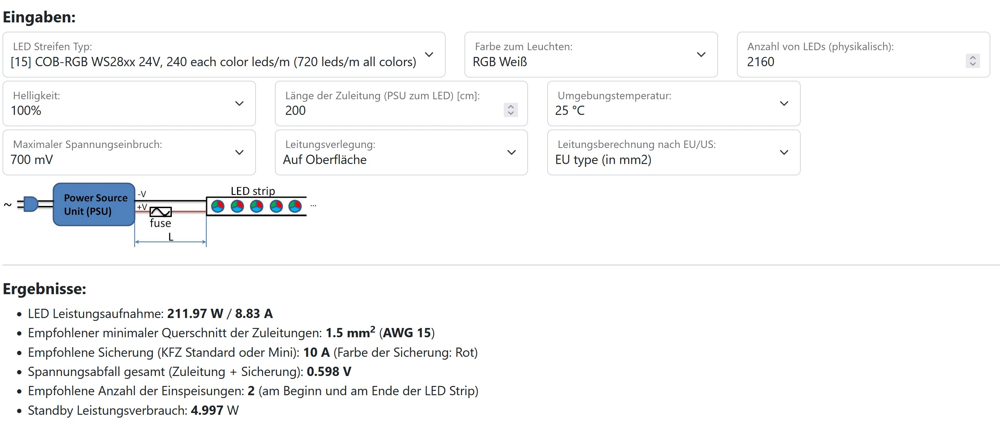
Die Leitung vom Netzteil zu LED Streifen muss also 1,5 mm2 sein und wird mit 10 A Sicherung abgesichert. Der Rechner schlägt zwei Stromeinspeisungen vor, einmal am Anfang und einmal am Ende des LED Streifens. Wir haben jedoch es anders, dass wir von einem Netzteil zwei Stückchen LED Streifen versorgen, was aber vom Stromverbrauch das gleiche ist. Daher kann man die Vorgaben aus dem Rechner bzgl. Einspeisungen übernehmen:
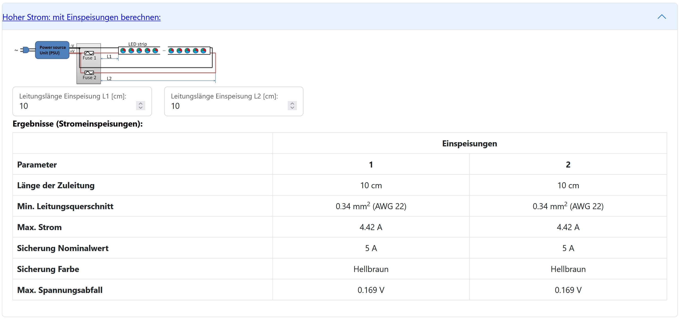
Also jede Einspeisung wird kurz implementiert, muss mindestens 0,34 mm2 sein und wird mit 5 A Sicherung abgesichert:

Noch vier Themen müssen angesprochen werden:
Das Ganze kann man dann z.B. mit einem Controller, zwei 24 V Relais Boards und 4x 5A Sicherungen von MyHome-Control realisieren:

Lösung: Es müssen gesamt (5+4)*2 = 18 Meter LED Streifen verlegt werden. Bei RGB FCOB Streifen bei der Angabe 720 LEDs/m wird gemeint, dass pro Meter 240 LEDs jeder Farbe (R,G,B) vorhanden sind. Daher zählen wir das wie bei LED Strips mit einzelnen LEDs, dass es 240 LEDs pro Meter sind. Bei 18 Meter ergeben sich 18*240 = 4320 "RGB" LEDs. Wir geben die Daten in den Rechner ein. Bei 24 V darf der Spannungsabfall höher sein, wir wählen 700 mV:
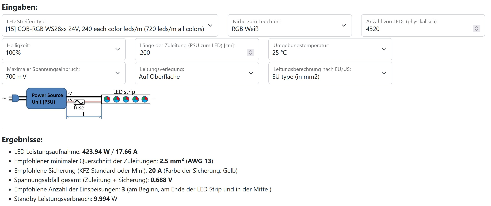
Das Ergebnis zeigt, dass man gesamt knapp 18 A braucht und man 3 Stromeinspeisungen realisieren muss: am Anfang, am Ende und in der Mitte. In der Mitte bedeutet in diesem Fall in der gegenüber liegender Ecke des Raums. Würde man das ganze mit einem Netzteil realisieren wollen, würde die Länge der Stromleitungen vom Netzteil zu jeweiliger Einspeisestelle betragen: 2m, 11m, 2m. Wir berechnen damit die Stromeinspeisungen:
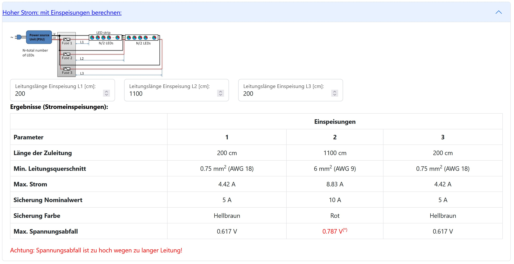
Dabei fällt auf, dass für die Mitteleinspeisung ein sehr dickes Kabel gebraucht wird, um den Spannungsabfall klein zu halten und man trotzdem 700mV überschreitet. Wir entscheiden deswegen in der Gegenüberliegender Ecker des Raumes ein weiteres Netzteil zu platzieren. Somit versorgt jedes Netzteil nur die jeweilige Hälfte des LED Streifens, dabei jeweils 4,5 Meter davon in jede Richtung:
Somit versorgt jedes Netzteil 9 Meter LED Streifen, also pro Netzteil müssen in dem Rechner 2160 LEDs eingegeben werden:
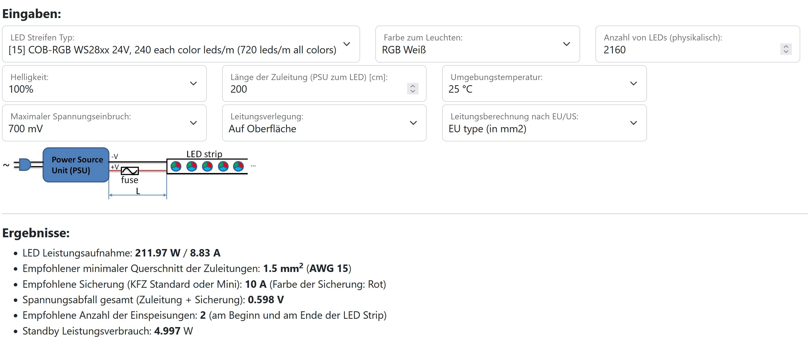
Die Leitung vom Netzteil zu LED Streifen muss also 1,5 mm2 sein und wird mit 10 A Sicherung abgesichert. Der Rechner schlägt zwei Stromeinspeisungen vor, einmal am Anfang und einmal am Ende des LED Streifens. Wir haben jedoch es anders, dass wir von einem Netzteil zwei Stückchen LED Streifen versorgen, was aber vom Stromverbrauch das gleiche ist. Daher kann man die Vorgaben aus dem Rechner bzgl. Einspeisungen übernehmen:
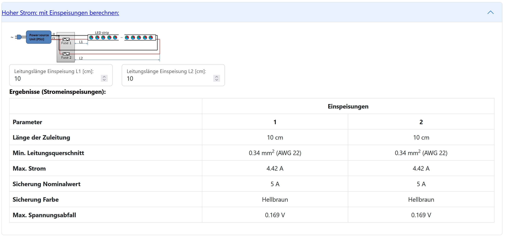
Also jede Einspeisung wird kurz implementiert, muss mindestens 0,34 mm2 sein und wird mit 5 A Sicherung abgesichert:
Noch vier Themen müssen angesprochen werden:
- An roten Punkten muss die 24 V Leitung am LED Streifen durchgetrennt sein. Damit wird sichergestellt, dass kein Strom aus einem Netzteil in das andere Netzteil fliesen kann um den störungsfreien und sicheren Betrieb der Netzteile zu gewährleisten.
- Der Standby Stromverbrauch liegt gesamt bei ca. 10 Watt (siehe Ergebnisse des Rechners). Daher sollte man Relais einsetzen um Strom zu sparen und die Umwelt zu schonen.
- Die Anzahl der „äquivalenten“ physikalischen RGB LEDs beträgt wie oben berechnet 4320 Stück. Da bei 24V Streifen meistens 6 davon in einer logischen Gruppe ist, beträgt die Anzahl der logischen LEDs 720 Stück. Diese alle können von einem Controller angesteuert werden, man gibt in WLED-Software die Anzahl der LEDs als 720 an.
- Die Stromverteilung kann man direkt an jedem Netzteil machen, dann gehen von jedem Netzteil 4 Leitungen nach oben, also jeweils +24V und GND für jedem 4,5 m LED-Abschnitt (1080 LEDs). Für jeden Segment kann man das mit dem Rechner wie folgt berechnen:
Das Ganze kann man dann z.B. mit einem Controller, zwei 24 V Relais Boards und 4x 5A Sicherungen von MyHome-Control realisieren: